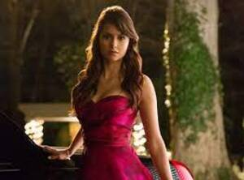
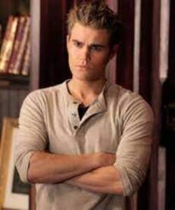
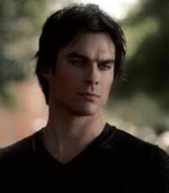
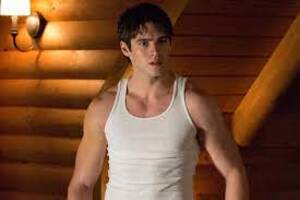

The best show to ever do it.....VAMPIRES FOR LIFE.
Overview
The series is set in the fictional town of Mystic Falls, Virginia, a town charged with supernatural history. It follows the life of Elena Gilbert (Nina Dobrev), a teenage girl who has just lost both parents in a car crash, as she falls in love with a 161-year-old vampire named Stefan Salvatore (Paul Wesley), who she thinks is just a normal human. Their relationship becomes increasingly intricate as Stefan's mysterious older brother Damon Salvatore (Ian Somerhalder) returns to Mystic Falls with a plan to bring back their past love, Katherine Pierce, who is Elena's doppelgänger. Although Damon initially holds a grudge against his brother for forcing him to become a vampire, he later reconciles with Stefan and falls in love with Elena, creating a love triangle among the three. Both brothers attempt to protect Elena as they face various villains and threats to their town, including Katherine.
Nina Dobrev as Elena Gilbert

Elena Gilbert
Elena Gilbert (season 1–6); guest season 8),a young orphan who falls in love with vampire Stefan Salvatore and later his brother, Damon, creating a love triangle. When Stefan turns his humanity off after being blackmailed by Klaus, Damon is given the opportunity to grow closer to Elena. This results in her being further drawn into the supernatural world and results in her struggling to survive supernatural events in the town. In the sixth-season finale, Elena's life was tied to Bonnie's in such a way that as long as Bonnie is alive, Elena will remain asleep. Damon put Elena in a coffin and had her hidden in a warehouse in Brooklyn for the next 60 years or so while he waits for her to wake up.Dobrev also portrays Elena's doppelgänger, Katerina Petrova, also known as Katherine Pierce. Dobrev sporadically appeared as Katherine in subsequent seasons, with Katherine playing a significant role in the second and fifth seasons.Dobrev also plays the progenitor of the Petrova doppelgängers and Silas's true love, Amara, during the fifth season, whom he had sought in the afterlife for two thousand years.
Paul Wesley as Stefan Salvatore

Stefan
Stefan Salvatore, a good-hearted and affectionate vampire and the complete opposite of his older brother, Damon Salvatore. Later in the series, Stefan reverts to his old ways as a Ripper to save Damon from a werewolf bite. His role becomes more antagonistic, after being forced to turn his humanity off. Eventually, he returns to his good-hearted and caring self and reconciles with Elena, but the relationship doesn't last long. He becomes human again in the final season and marries Caroline in the eighth season but is killed afterwards in the series finale as he sacrifices himself along with Katherine to save Mystic Falls.Wesley also portrays his revealed doppelgänger, Silas, the world's first immortal being, in the fourth and fifth seasons.Wesley also played another doppelgänger, Tom Avery, during the fifth season.
Ian Somerhalder as Damon Salvatore

Damon S
Damon Salvatore,Stefan's malevolent elder vampire brother. He is mostly thought of as selfish and manipulative, using humans for his own gain with no regard but later on begins to display a more caring side. Throughout the series, Damon is able to repair his relationship with Stefan, and becomes best friends with Alaric and Bonnie. Though his love for Elena is initially one-sided, she begins to develop feelings for him as they work together to save Stefan after he's given in to his Ripper side. They begin dating in the fourth season, after Elena transitions into a vampire, and continue to have an on-and-off relationship until a now human Elena is put into her deep sleep at the end of the sixth season.
Steven R. McQueen as Jeremy Gilbert

Jeremy Gilbert
Jeremy Gilbert (seasons 1–6; guest season 8),Elena's younger brother, later revealed to be her biological cousin. He later becomes a member of The Five, a vampire hunting group giving him supernatural strengths. Jeremy is killed in the fourth season after Katherine throws him onto Silas, who drains his blood. He is resurrected by Bonnie Bennett, his love interest, in the fourth-season finale. In the sixth season, he leaves Mystic Falls to hunt vampires, unbeknownst to everyone other than Alaric. Jeremy returns to Mystic Falls in the final episode after Elena's curse is broken, and begins working as a teacher at the Salvatore Boarding School for the Young & Gifted that Alaric and Caroline open.
Kat Graham as Bonnie Bennett
Bonnie
Kat Graham as Bonnie Bennett,Elena and Caroline's best friend and a very powerful witch. She has died numerous times but always found a way to return. She develops and controls her powers with the help of her grandmother, Sheila or "Grams", another witch in the Bennet family. She is often able to use her magic to help the group, and while she initially hates vampires, particularly Damon, she ends up warming up to them; she and Damon become best friends after being stuck in a prison world with him for four months during season six. Bonnie has lost and regained her ability to do magic multiple times throughout the show. She spent the second through fifth seasons in an on-again, off-again relationship with Elena's brother Jeremy and later became involved with Enzo. In the seventh season, Bonnie faces the challenge of having received Rayna Cruz's hunters' curse, which puts all her vampire friends at risk. In the series finale, Bonnie breaks the sleeping spell on Elena and leaves Mystic Falls to travel the world.
Production
Initially, Kevin Williamson had little interest in developing the series, as he found the premise too similar to the Twilight novels. However, at the urging of Julie Plec, he began to read the books. He started to become intrigued by the story: "I began to realize that it was a story about a small town, about that town's underbelly and about what lurks under the surface." Williamson has stated the town's story will be the main focus of the series rather than high school.On February 6, 2009, Variety announced that The CW had green-lit the pilot for The Vampire Diaries with Williamson and Julie Plec set as the head writers and executive producers. On May 19, 2009, the series was officially ordered for the 2009–2010 season.The series was given a full 22-episode order on October 21, 2009, after strong ratings for the first half of the season. On February 16, 2010, The CW announced that it had renewed the show for a second season, which premiered on September 9, 2010. On April 26, 2011, The CW renewed the show for a third season.The third season premiered on September 15, 2011.The fourth season premiered on October 11, 2012. The CW renewed the show for a fifth season on February 11, 2013. On February 13, 2014, The CW renewed the series for a sixth season. On January 11, 2015, the CW renewed the series for a seventh season.
The end of an era?
On April 6, 2015, lead actress Nina Dobrev confirmed that she and co-star Michael Trevino (who plays Tyler Lockwood) would be leaving the show after its sixth season. Dobrev returned to record a voiceover for the seventh-season finale and returned as a guest star in the series finale.Trevino appeared as a guest star in the seventh and eighth seasons.